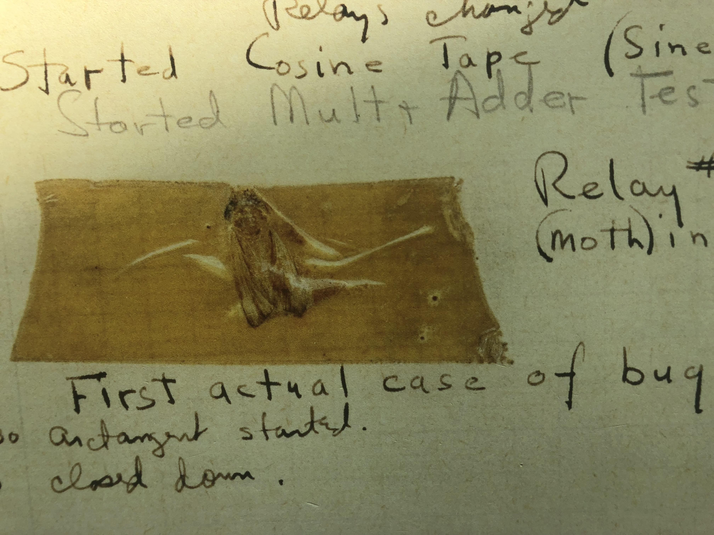
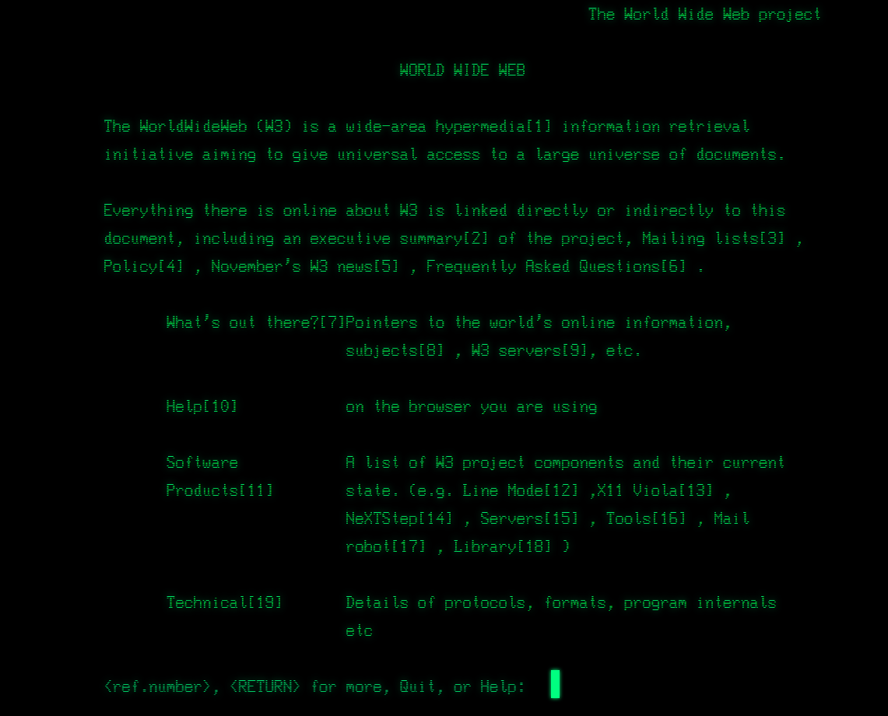
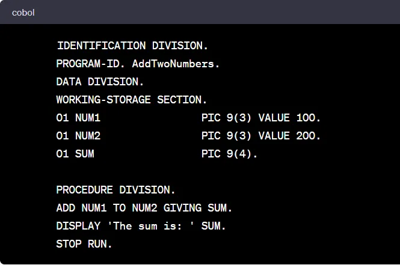
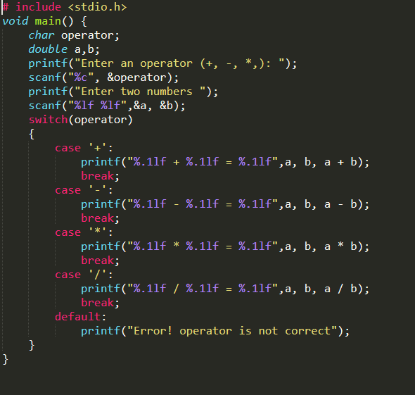
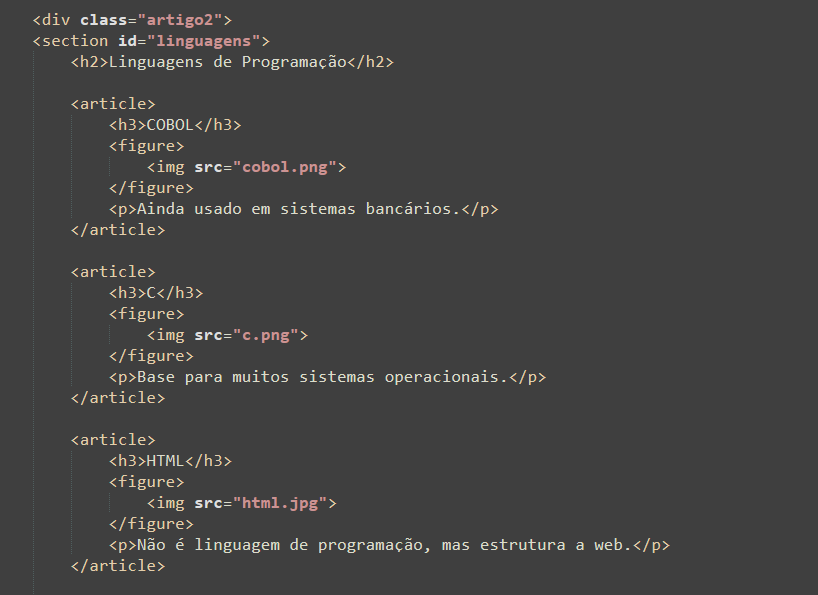

Ada Lovelace
Considerada a primeira programadora da história.
Ver mais
Ela escreveu um algoritmo para a Máquina Analítica no século XIX.
Uma coletânea caótica de fatos históricos, curiosos e inesperados.
Considerada a primeira programadora da história.
Ela escreveu um algoritmo para a Máquina Analítica no século XIX.
"Podemos ver apenas um pouco do futuro, mas o suficiente para perceber que há muito a fazer."
Criador do conceito de Máquina de Turing.
Uma mariposa encontrada em um computador em 1947.

Primeiro vírus da história (1971).
Mensagem exibida:
I'M THE CREEPER, CATCH ME IF YOU CAN!

Criado em 1991 por Tim Berners-Lee.
A precursora da internet moderna.

Antes dos emojis gráficos, usávamos:
:-)
;-)
:-D

Ainda usado em sistemas bancários.

Base para muitos sistemas operacionais.

Não é linguagem de programação, mas estrutura a web.
| Linguagem | Ano |
|---|---|
| COBOL | 1959 |
| C | 1972 |
| Python | 1991 |
| Dados históricos aproximados | |